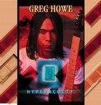

Home Artist links Label link

Greg Howe - Hyperacuity
| Artist: | Greg Howe |
| Title: | Hyperacuity |
| Label: | Tone Center TC-40092 |
| Length(s): | 45 minutes |
| Year(s) of release: | 2000/2002 |
| Month of review: | [09/2002] |
Sample this album in MP3 or RealAudio
The music
In the late eighties Greg Howe was mostly known for his workings in the metal area. His joining Tone Center indicates he has moved on from that (or drifted off, depending on your point of view). Remarkably and despite all that, Greg still publishes his music with Mike Varney's company, with which he started out from the beginning of his professional carreer. Despite being two years old, this album was released for the European market until now. Hyperacuity is very much a Tone Center record, although the guitar content might not be present as dominantly as could be expected from a guitarist, making the record all the more listenable. Especially Receptionist takes a special place, being a percussion track making for a nice change. By giving both his bass player and percussionist room to breath, though, he does come pretty close to the basic Tone Center threesome formula.
© Roberto Lambooy